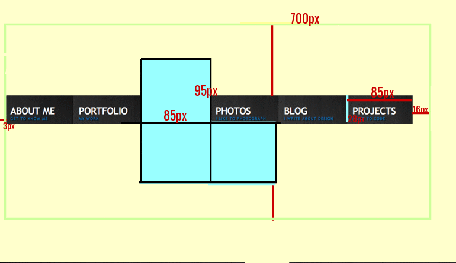
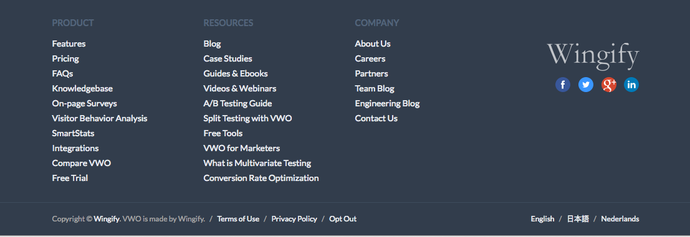

My name is Russay Hernandez. I am currently a student at Full Sail University pursuing a degree in web design and development. Prior to my enrollment, i was a United States Marine for about 6 years. Although web design is quite different than being in the military, it is something i hold a passion for. This year, i hope that all the knowledge i learn in school in retained so that i can be an outstanding developer.
Component Library

Drop-down menu
What I hope to practice/learn?
Drop down menus are not too difficult to create. But as a web developer, i have to learn how to do, or how to learn to do more complex elements on a website. This particular drop down requires the use of some JQuery code in order to be made. Something that i am not preficient at as of yet.
How this relates to what I have/will learn in WDD.
I have taken JQuery as part of my curriculum. Unfortunately retaining that knowledge is not easy. Although there are different ways i can create this drop down menu, such as plain javascript, i want to be ready to use frameworks or libraries to create unique functionality on my website.
How might I build this?
I would start with a <Ul>
Nested inside would a an <li> for each individual menu
Each would have a <href> containing a <img> as well as <span> with a class that you can target with your CSS and JQuery
Then add JQuery and CSS
Video Background
What I want to practice/learn?
I decided to stick with the same topic as the example. Video background. Not because of lack of effort, but because i find the topic interesting. When it comes to videos there are numerous things that can go wrong and the user wouldn't be able to see the video. How do you make the video responsive? What happens if it fails? I intend to find out.
How this relates to what I have/will learn in WDD.
I've learned quite a few things about adding videos to a website, but not to add it as a background. I look forward to learn how to properly do it and make it responsive.
How might I build this?
i would first create a <section>
Then add a <video> element that includes auto play with a still frame poster so the blackground can default to it in case the video fails
I would then add a <source> element with src to locate the video file
you could add two types, mp4 or webm. two is better than one to make sure that video will play on most browsers.

Footer
What I want to practice/learn?
Cycling between content is done all the time within an image carousel. Applying this technique to more robust content could easily save lots of room on the page. Developing this component should allow me to practice both CSS and Javascript techniques. Using images as pagination just seems really interesting. Breaking from the norm.
How this relates to what I have/will learn in WDD.
I've created footers before in previous classes, but not enough for me to remember to use the footer element instead of just using DIVs. this is a bad habit i have to break.
animated background
What I hope to practice/learn?
I found this really cool responsive template that i want to learn how to do. The background changes and a second later the header changes too. I don’t know how to do this, but it is something that i would really want to learn.
How this relates to what I have/will learn in WDD.
The animation presented is done with javascript. In addition, i believe it uses a library of sort to create the animation.
Responsive HTML5
What I want to practice/learn?
Responsive web design is something i want to be proficient at. It is ideal to have a website that offers the ability to view them on mobile devices. Changing the size of the browser without the website breaking down is also essential.
How this relates to what I have/will learn in WDD.
I’ve done projects and assignments that require responsive designs. But this alone is not sufficient for it to become second nature. I want the ability to go on CSS and naturally know exactly what needs to be done to make the website responsive.